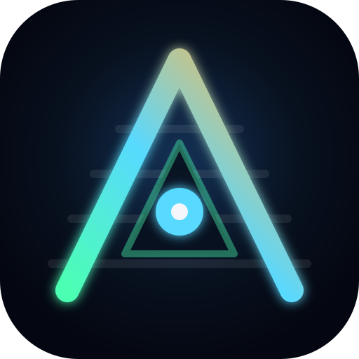

Market Cap
$0
Waiting for feed...

Abyss WatchersDecentralized Signal Hub
Abyss Watchers blends live crypto market movement with current scientific publishing so your community can spot momentum across networks, research labs, and emerging ideas.
Topic channels
Market Cap
Waiting for feed...
24h Volume
Across the tracked crypto universe.
BTC Dominance
A quick check on risk appetite.
Research Hits
Recent papers matching your topic signal.
Crypto Pulse
Live from public market feeds.
| Asset | Price | 24h | Market cap | Volume |
|---|
Research Radar
Sorted toward the newest signal we can find.
Watchlist Mesh
Saved locally on this device so your node keeps context.
Signal Summary
A quick narrative stitched from market and research movement.
Radio Node
Nothing plays unless the user explicitly opts in.
Playback Notes
Built to respect user choice and browser autoplay rules.
The radio panel stays off until someone clicks Enable Radio.
Load a public YouTube video or playlist link and the embed will act like a lightweight station.
Because browsers can still block audible autoplay, the player may occasionally need one extra press inside the embed.